Dignity Notes user manual
Speak a short note as things happen. Dignity Notes keeps your words and the recording, writes a tidy care note, and builds the handover for the next carer.
1What Dignity Notes does
Dignity Notes is for carers who look after an older person at home. It runs in the web browser on your phone, so there's nothing to install.
In a typical shift
- Press the red Record button and say what happened, as if leaving a voice message.
- Check the tidy note the app writes, then save it.
- Anything that needs following up, like a new bruise or a missed drink, shows under Needs attention.
- At the end of your shift, the app writes the handover for the next carer from your notes.
Add Dignity Notes to your home screen so it opens like an app. On iPhone, tap the Share button in Safari, then Add to Home Screen. On Android, tap the ⋮ menu in Chrome, then Add to Home screen.
2Signing in
You need the username and password that your administrator gave you. You stay signed in for 30 days on the same phone.
Sign in
- Open the Dignity Notes link on your phone.
- Type your username and password.
- Tap Sign in.
Use the same phone each time. Your administrator can see when an account is used on a new phone, and can lock an account to its first phone.
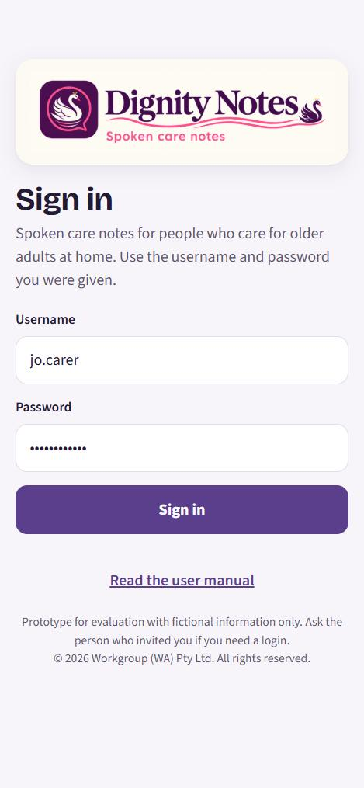
Read and accept the privacy notice
The first time you sign in, and whenever the notice changes, you'll see the privacy notice. It explains what information is kept and who can see it.
- Read the notice. Scroll down to the end.
- Tick I've read the privacy notice and agree.
- Tap Agree and continue.
If you don't agree, tap I don't agree (sign out). You won't be able to use the app.
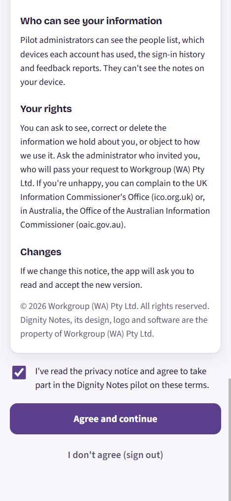
3Choosing who you care for
After signing in, choose the person you're caring for (the "client"). If there's only one, the app opens them straight away.
Pick a client
- Under Who are you caring for?, tap the person's name.
- The app opens their Today screen.
Each client shows who agreed to Dignity Notes being used, and when. That agreement was given once, when the client was added, so you won't be asked for it again.
To change client later, go to Settings (the cog, top right), then Switch or add client.
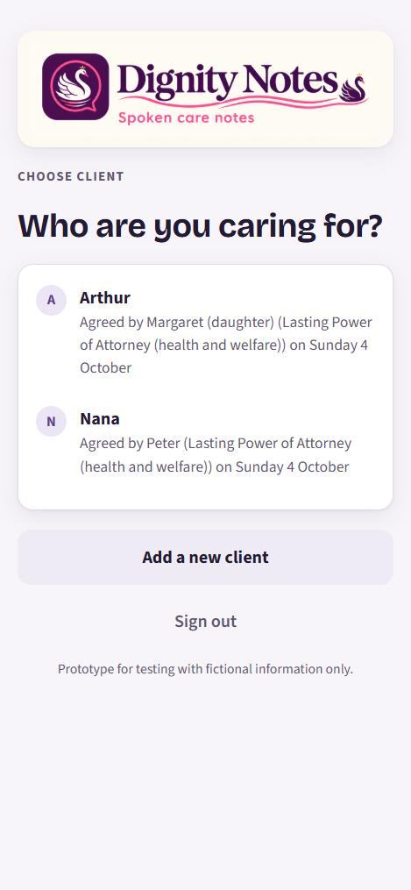
Add a new client (only once per person)
Before Dignity Notes is used for someone new, they must agree, or the person who holds their Lasting Power of Attorney for health and welfare must agree for them.
- Tap Add a new client.
- Type the client's name (a first name is enough).
- Read the short explanation with them: what is recorded, who can see it, and why.
- Type the name of the person agreeing and choose who they are: the client, their attorney, or another authorised family member.
- Tick the agreement box and tap Add client and start.
The agreement is saved once, for everyone. Every carer who signs in will see it.
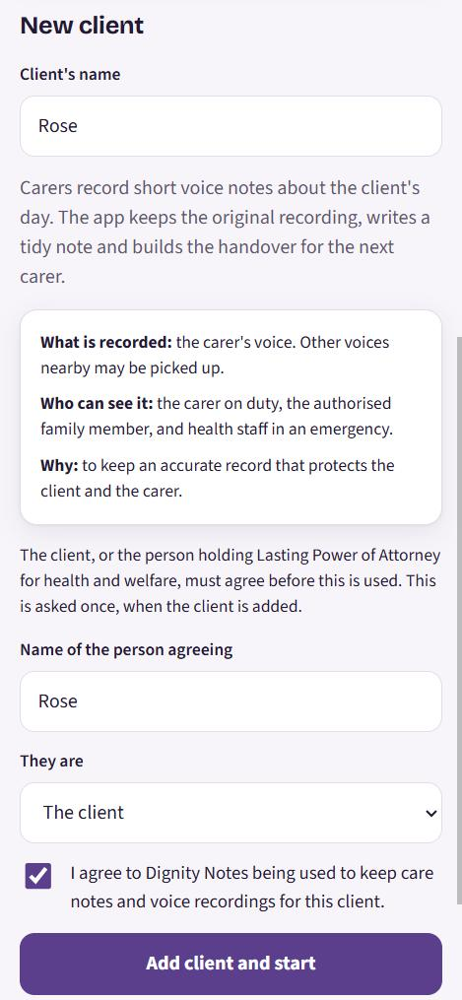
4The Today screen
This is home. It shows what matters right now for the person you're caring for.
What's on it
- At the top: the client's name, the carer on duty, the ? help button and the cog for settings.
- Record care note: the big purple button. The red button at the bottom does the same.
- Needs attention: follow-ups and incidents that are still open.
- Previous handover: what the last carer passed on to you.
The tabs along the bottom take you to Today, Record log, Record, Handover and Family. The red number on Today shows how many things need attention.
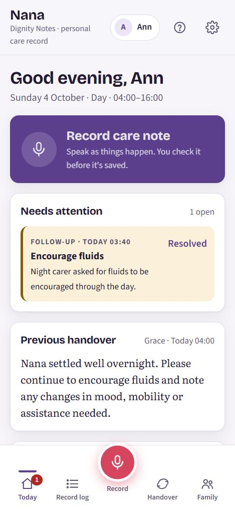
Further down
- Today & coming up: appointments and plans. See Appointments and plans.
- Going out with someone else? Use this when family take the client out. See When someone takes them out.
- Latest note: the most recent saved note.
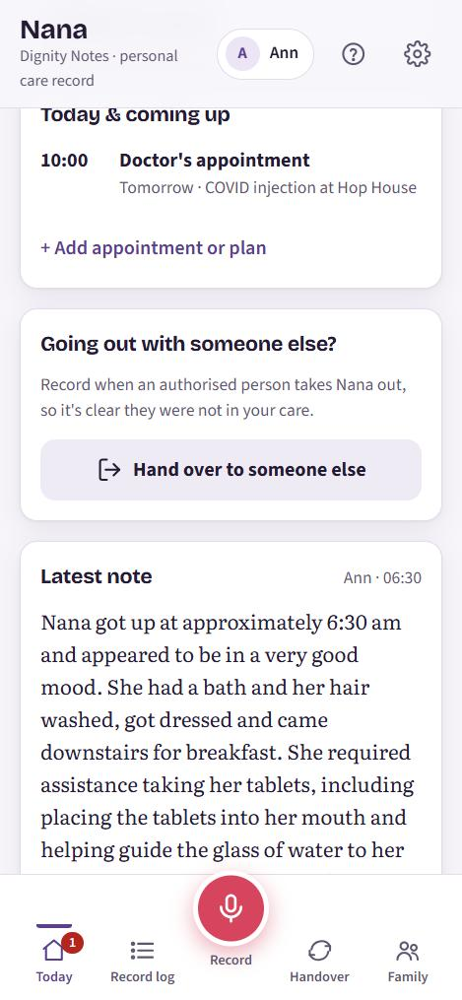
5Recording a care note
Record as things happen, while the details are fresh. Short notes through the day work better than one long note at the end.
Record your voice
- Tap the red Record button.
- Tap the big red microphone and start speaking. The first time, your phone asks to use the microphone: tap Allow.
- Speak naturally. You'll see your words appear as you talk.
- Tap the microphone again to stop.
What to say: what happened, roughly when, and anything you noticed. For example: "Nana had porridge and half a cup of tea about eight, took her tablets with a full glass of water, she was cheerful. There's a little red mark on her left forearm that wasn't there yesterday."
Can't speak out loud right now? Tap Type instead and type the note.
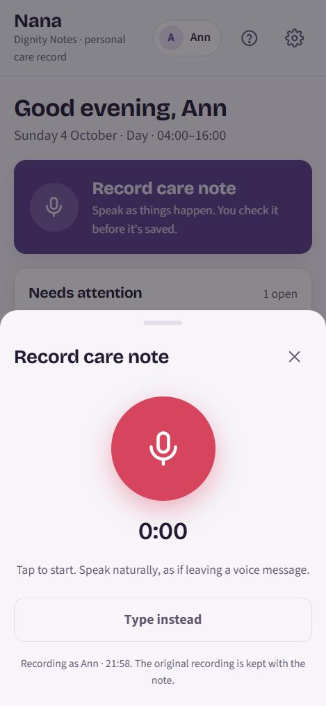
6Checking and saving a note
Nothing is saved until you've checked it. You are always in charge of what goes in the record.
Check before saving
- Read the Care note. The app has removed the "ums" and written it clearly. Tap the note to correct anything.
- If it shows Check these words, look at those words: they may have been misheard.
- Covers shows the topics the note includes, like Meals or Medication.
- Flags shows anything that needs following up. Tap Remove if a flag isn't right.
- Tap Save to record.
Your original words and recording are kept with the note. Tap What you said to see them.
A small label at the top says how the note was written. Tidied by AI means the AI wrote it. Basic tidy means there was no internet, so the app did a simpler tidy on the phone.
Not happy? Tap Re-record to try again, or Discard to throw it away. Both ask you to tap twice, so you don't lose a note by accident.
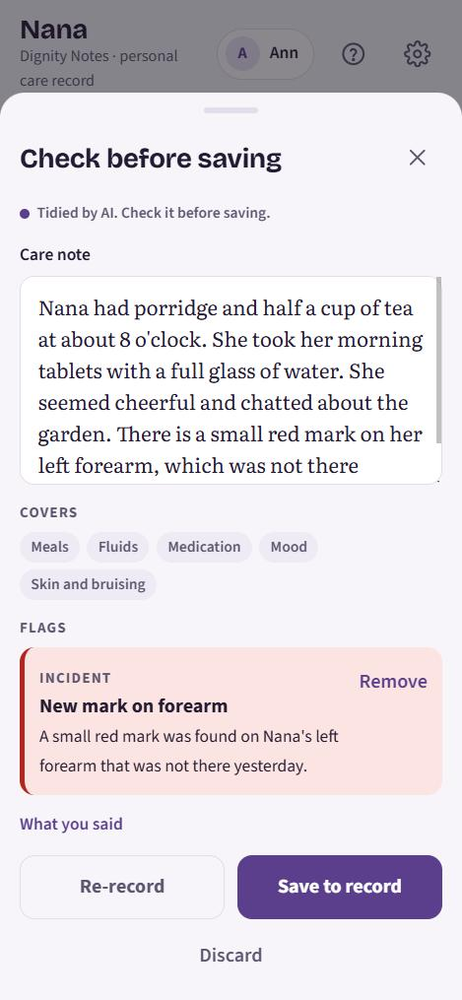
7Things that need attention
When a note mentions something important, the app adds a flag to the Today screen so it isn't forgotten.
Two kinds of flag
- Incident (red): for example a fall, a bruise or skin tear, bleeding, or an accident.
- Follow-up (yellow): for example a refused tablet, not drinking enough, a pad change needed, or something the next carer must check.
When it's dealt with
- On the Today screen, find the flag under Needs attention.
- Tap Resolved. The app records who resolved it and when.
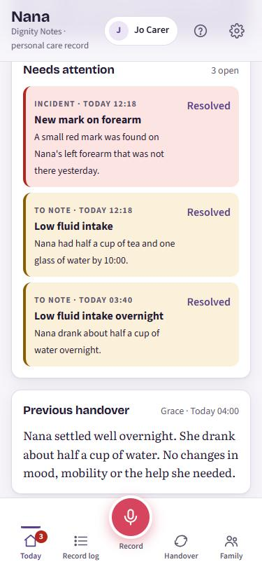
8The record log
Every saved note, outing and handover, newest first, grouped by day.
Find a note
- Tap Record log at the bottom.
- Use Everything, Incidents or Follow-ups to filter.
- Tap Play original recording (or Original words) under a note to hear or read exactly what was said.
Each note shows the time, the carer who saved it, any flags and the topics it covers.
The original recording protects you as well as the client. If there's ever a question about what happened, your own words are there.
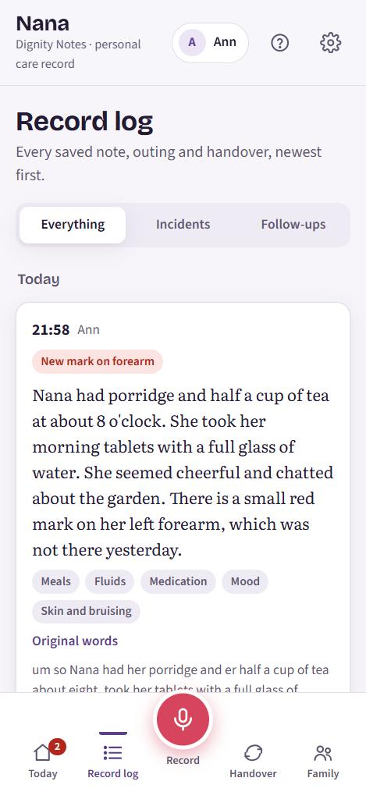
9Appointments and plans
Keep track of what's coming up, like a doctor's visit or the hairdresser.
Add an appointment
- On the Today screen, scroll to Today & coming up.
- Tap + Add appointment or plan.
- Type what it is and any details.
- Choose the day and type the time (for example 14:30).
- Tap Add.
Upcoming plans are also included in the handover, under "Coming up".
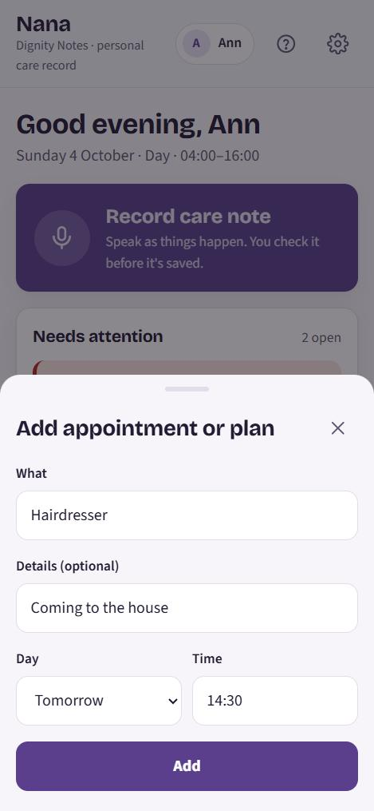
10When someone takes them out
When a family member or another authorised person takes the client out, record it. It shows clearly that they were not in your care during that time.
Hand over to someone else
- On the Today screen, tap Hand over to someone else.
- Type who is taking them, their relationship and where to.
- Tap Confirm handover. The time is recorded automatically.
Only hand over to someone the family has authorised.
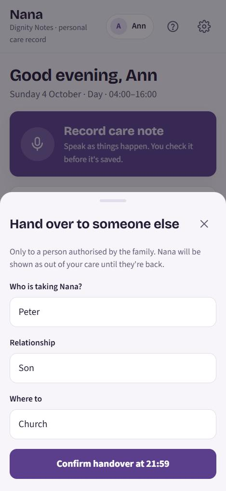
While they're out
A yellow banner at the top shows who they're with and since when. Notes you record still work, and the app reminds you they're out.
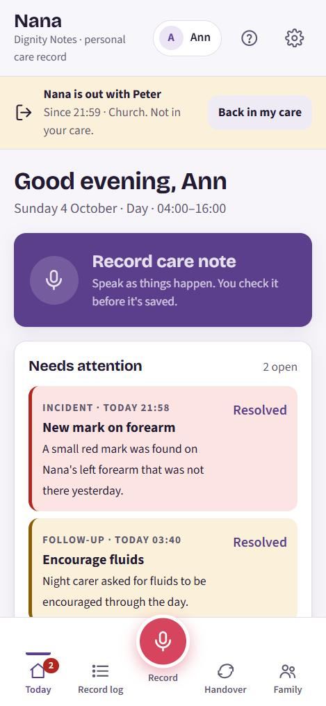
When they're back
- Tap Back in my care on the banner.
- Add a note if you like, for example "Had lunch out, seemed tired".
- Tap Confirm back.
Both times appear in the record log.
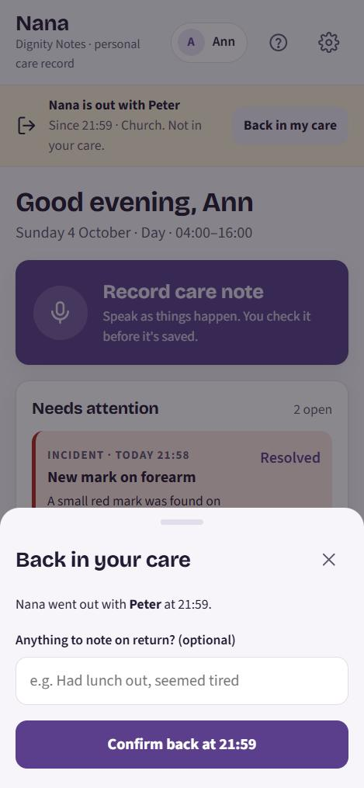
11Who's on duty
Every note is stamped with the carer on duty, so make sure it's you.
Change the carer on duty
- Tap the name button at the top (for example Ann).
- Tap your name.
At the end of a shift, use Handover instead: it passes on properly and switches the carer for you.
Carer names and shift times are set in Settings.
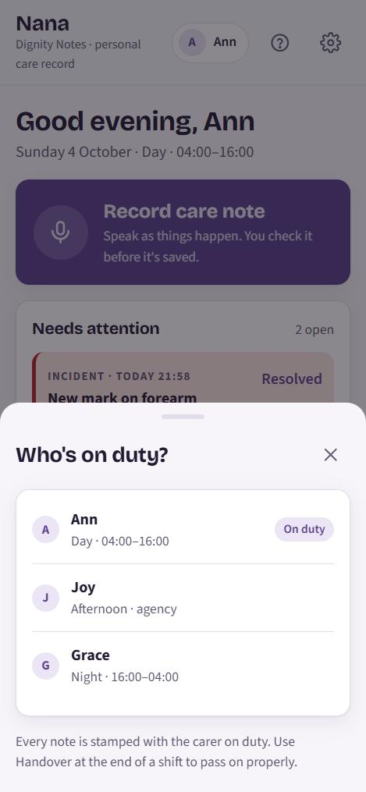
12End-of-shift handover
The app writes the handover from your saved notes and open flags, so you don't have to write anything twice.
Hand over to the next carer
- Tap Handover at the bottom.
- Tap Prepare handover. It takes a few seconds.
- Read it. It has three parts: How the shift went, Concerns for the next carer and Coming up. Tap to change anything.
- Under Handing over to, choose the next carer.
- Tap Approve and hand over.
The next carer becomes the carer on duty and sees your handover on their Today screen. Past handovers are under Recent handovers.
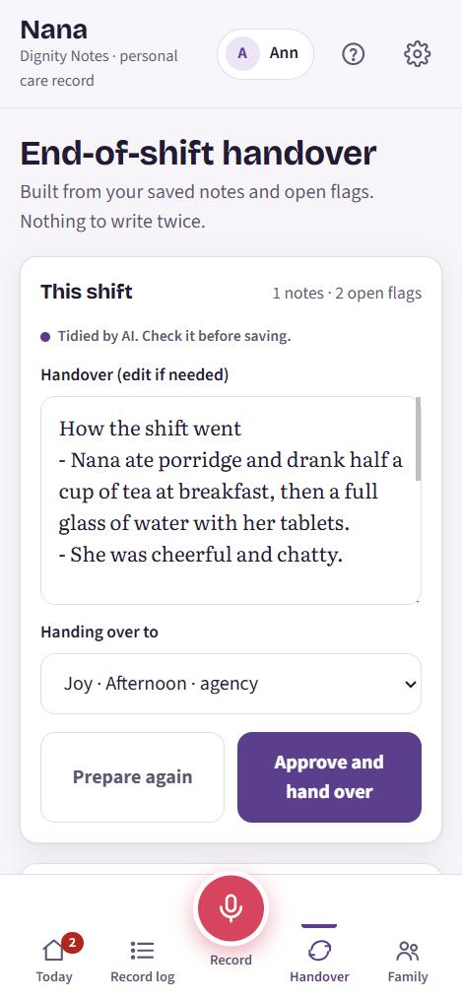
13The family page
What the authorised family member sees: a short daily summary, any incidents, and messages. Not every note.
Today's summary
- Tap Family at the bottom.
- Tap Write today's summary. The app writes a short, warm update from today's notes.
- Tap Write again if you want a fresh version.
Incidents today lists anything serious from today, in plain words.
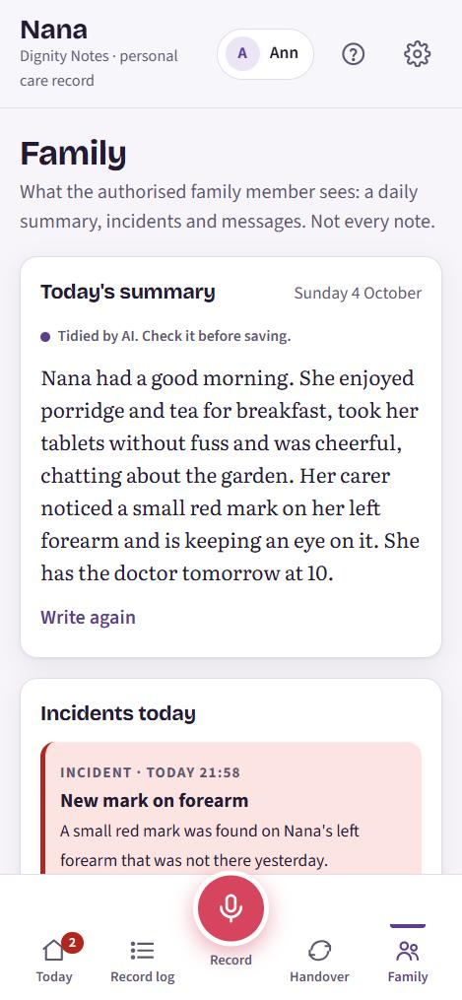
Messages
- Scroll to Messages.
- Type in Write a message and tap Send.
Messages reach whoever is on duty. In this pilot both sides are on the same phone, so you can choose Send as family or Send as the carer to try it out.
Alert family about incidents is off unless the family chooses to switch it on. Dignity Notes is a care record, not a way of watching the carer.
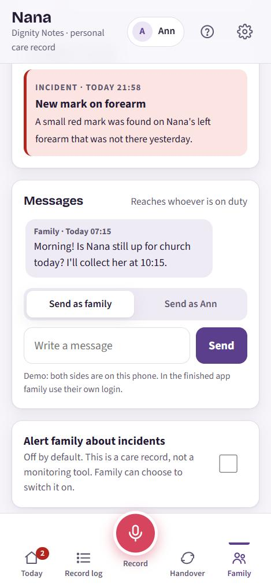
14Settings
Tap the cog at the top right.
What you can do
- Your account: shows who you're signed in as. Check AI connection tells you whether notes will be written by AI. Sign out signs you out of this phone.
- Client: Switch or add client takes you back to the client list.
- Carers: change carer names and shift times, then tap Save names.
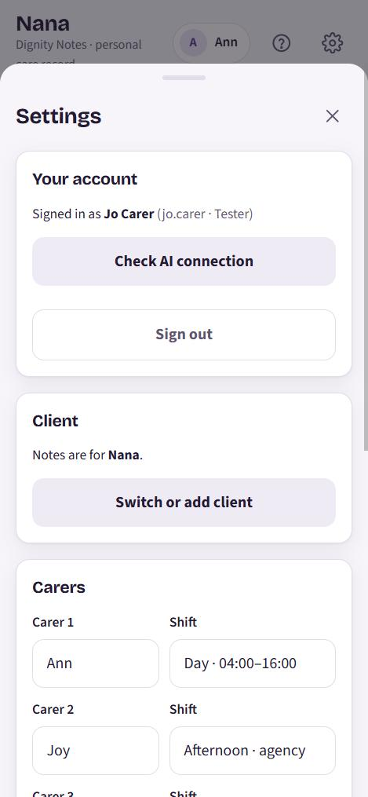
Further down
- Consent: who agreed to Dignity Notes being used for this client, and when.
- Demo data: Reset demo deletes this client's notes and recordings on this phone and brings back the example day. It asks you to confirm first.
- Read the privacy notice at any time.
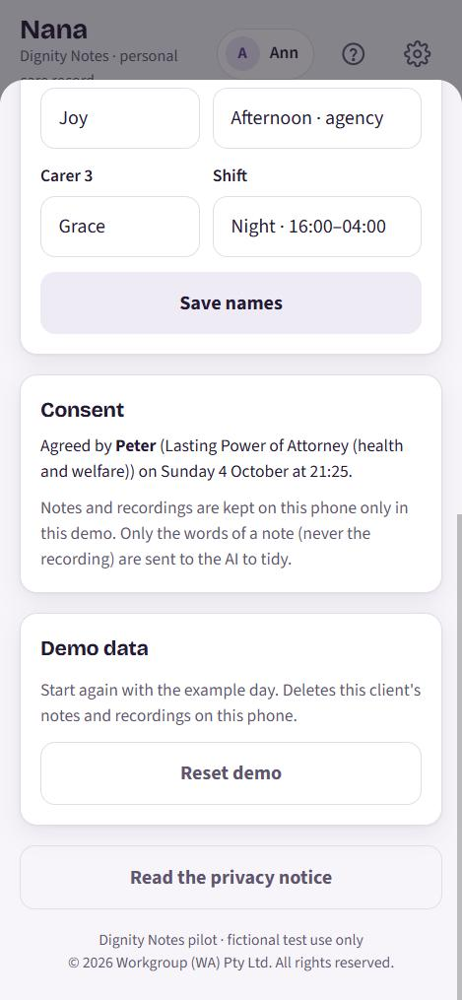
15Help and feedback
Tap the ? at the top of any screen to open this manual, report a problem or suggest an idea.
The help menu
- Open the user manual opens this guide.
- Report a problem: something didn't work as expected.
- Suggest an idea: something that would make your day easier.
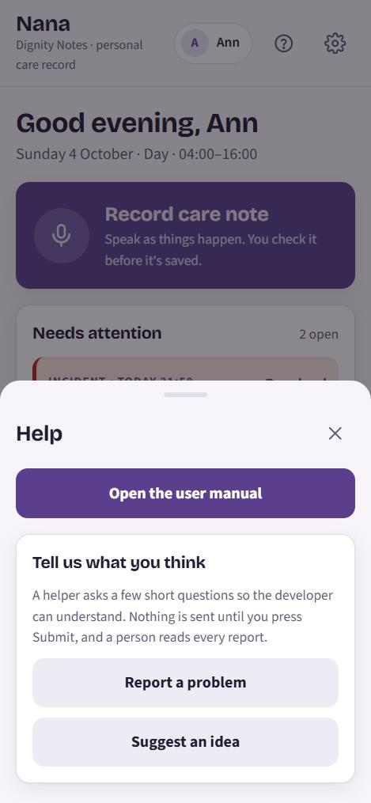
Report a problem or suggest an idea
- Tap Report a problem or Suggest an idea.
- Type what happened, or your idea, and tap Send.
- A helper asks one or two short questions so the developer understands. Answer in your own words.
- If a picture would help, tap Add screenshot and choose a screenshot from your photos.
- When the helper has enough, the Submit button appears. Tap it.
Nothing is sent until you press Submit, and a person reads every report. If you close it halfway, your report is kept on the phone: open ? again and tap Carry on with it.
Leave out real names, addresses, phone numbers and health details. Describe the problem, not the person. Screenshots are seen by the administrators and the AI helper, so avoid screens that show care notes.
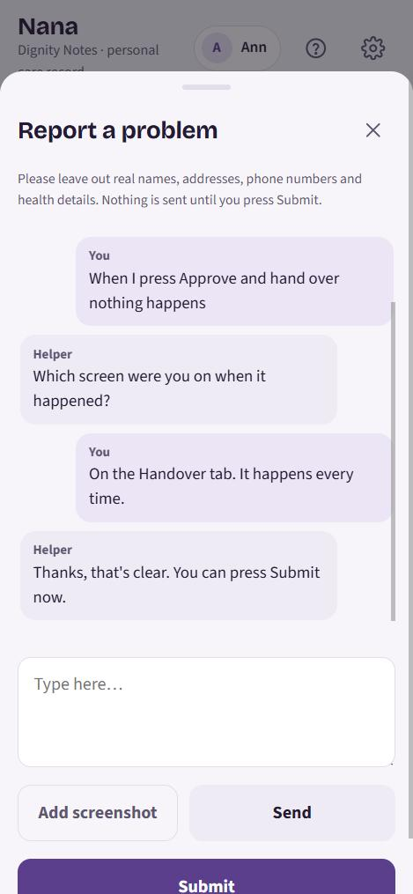
16For administrators
Administrators can add and remove people, check sign-ins, and read feedback reports. If you're a carer, you can skip this section.
Manage people
- Go to Settings, then tap Manage people.
- Each person shows their username, when they were added, and whether they've accepted the privacy notice.
- A red ⚠ 2 devices badge means the account has been used on more than one phone. Tap Devices to see which phones and where.
- Lock to first device: refuses sign-ins from any other phone.
- Reset devices: the next phone they sign in on becomes their home phone.
- New password: makes a new password for you to send them.
- Remove: signs them out straight away and deletes their account (tap twice to confirm).
Sign-in history lists every sign-in from the last 90 days, including wrong passwords and blocked phones.
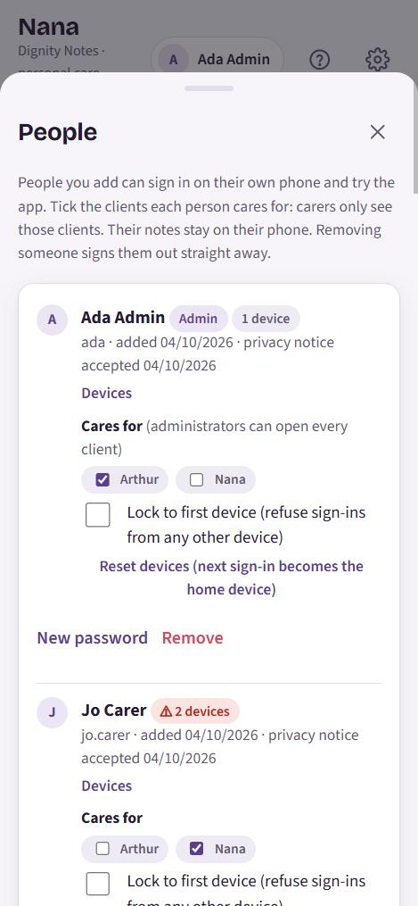
Add a person
- Scroll to Add a person.
- Type their name and choose a username (for example mary.smith).
- Keep the suggested password, or tap Suggest for another.
- Tick Administrator only if they should manage people too.
- Tap Add person, then Copy details, and send the details to them yourself.
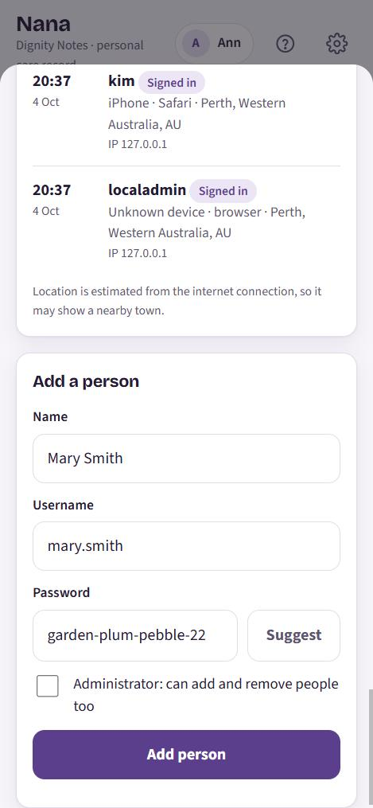
Feedback reports
- Tap ?, then Feedback reports (administrators).
- Each report shows whether it's a Problem or an Idea, how serious it looks, its status, and who sent it.
- Tap a report to open it.
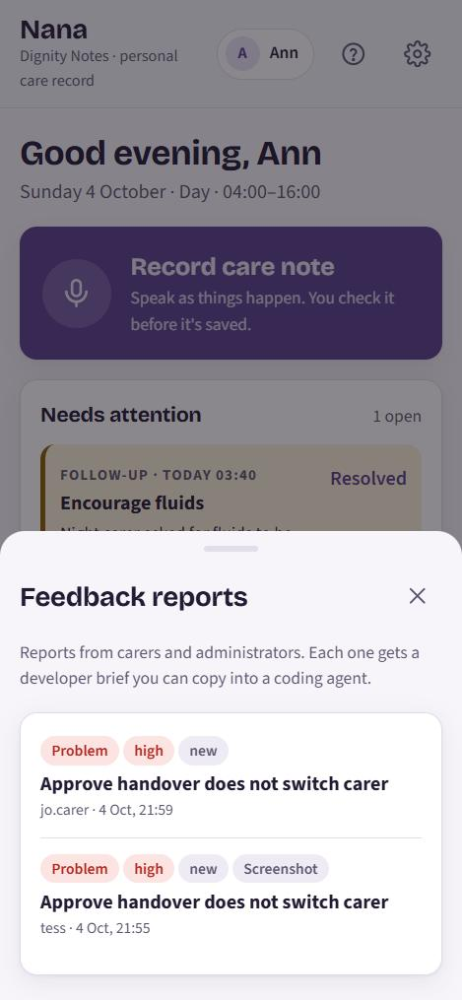
Reading a report
- The full conversation and any screenshot.
- Analysis: likely causes, things the carer can do meanwhile, and questions to ask them. These are suggestions to check, not facts.
- Developer brief: a work order for the developer. Tap Copy brief for coding agent to copy it.
- Status: set it to new, in progress, done or won't fix.
The brief usually appears within a couple of minutes. If it says Brief failed, tap Analyse again; the old brief stays until a new one is ready. Reports are deleted automatically 12 months after they were sent.
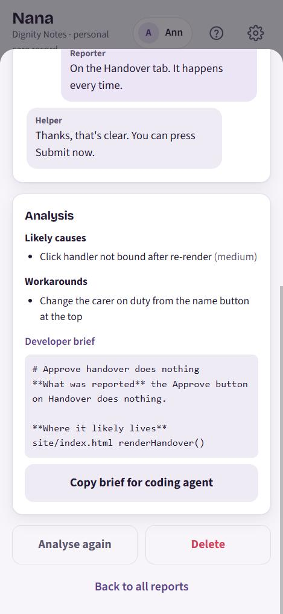
17Problems and questions
The app didn't pick up what I said
Check that the phone allowed the microphone (the first time, it asks). Speak a little closer to the phone. If your words still don't appear, the recording is kept: you can play it back and type a short version, or tap Type instead. Speech-to-text works best in Chrome on Android and Safari on iPhone.
There's no internet
You can still record and save notes. The app does a simpler Basic tidy on the phone instead of the AI note. The handover and family summary also use a basic version until you're back online.
"Your sign-in has ended"
Sign-ins last 30 days. You'll also be signed out if an administrator removed or changed your account. Sign in again, or ask your administrator.
"This account is set up on another device"
Your account is locked to the first phone you used. Ask your administrator to tap Reset devices for you, then sign in on the new phone.
I forgot my password
Ask your administrator. They'll make a new one in Manage people and send it to you.
I can't see notes from another carer's phone
In this pilot, notes and recordings stay on the phone that made them. The handover is how information passes between carers. Sharing notes between phones is planned for a later version.
The client I was using has disappeared
An administrator has removed that client, for example because the agreement was withdrawn. The app takes you back to the client list. Speak to your administrator.
Who can see what I record?
Notes and recordings stay on your phone. Only the words of a note (never the recording) are sent to the AI to be tidied, and they aren't kept. Administrators can see the list of people, sign-ins and feedback reports, but not your notes. The exception is a screenshot you choose to send with feedback: the administrators and the AI helper see whatever it shows. Read the full privacy notice in Settings.
Something else is wrong
Tap ?, then Report a problem. A screenshot helps a lot.